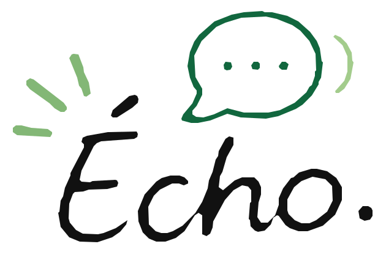

Avant · Commencer
Tu peux parler librement, sans préparation. Si tu as un objectif précis, Écho le prendra en compte.
PO · Pratique orale accompagnée par l’IA

S’exprimer, interagir et progresser.
Tu peux commencer sans sujet précis
Choisis ce qui te convient. Tu peux commencer sans idée précise et changer de sujet pendant l’échange.
Si tu n’as pas de sujet, Écho pourra lancer une conversation naturellement.
Niveau de départ (adaptable pendant l’échange)
Ma prochaine conversation
Aucun sujet n’est nécessaire. Écho pourra commencer à discuter avec toi, puis suivre le fil de tes idées.
« Salut ! Ça te dit de discuter un peu ? Comment s’est passée ta journée ? »
Qu’as-tu réussi à exprimer ? À quel moment as-tu hésité ? Que pourrais-tu essayer lors de ta prochaine conversation ?
Tu peux garder ces questions pour toi, ou relancer une conversation pour en parler à Écho.
Version d’essai encadrée. Le code d’accès est nécessaire avant chaque conversation. Les fonctionnalités et les limites d’usage pourront évoluer avant l’ouverture à toute la classe.
Prendre la parole · Interagir · Faire le point
Tu peux parler librement, sans préparation. Si tu as un objectif précis, Écho le prendra en compte.
Écho réagit à ce que tu dis, te laisse développer tes idées et propose une aide seulement si elle est utile.
Si tu le souhaites, prends un moment pour repérer une réussite, une difficulté et une stratégie à essayer la prochaine fois.
Unité 2 · Sommes-nous prisonniers de notre apparence ?
Les vêtements disent-ils quelque chose de notre personnalité ?
Parlez de votre rapport aux vêtements. Expliquez les raisons de vos choix et donnez un exemple concret.
Objectifs de l’échange
Dans quelles situations votre façon de vous habiller change-t-elle ?
Peut-on juger une personne d’après ses vêtements ? Pourquoi ?
Essayez d’utiliser : à mon avis, cela dépend, par exemple.
L’uniforme à l’école est-il une bonne idée ?
Formulez une position, écoutez un contre-argument et apprenez à y répondre avec nuance.
Objectifs de l’échange
Quels seraient les avantages et les inconvénients de l’uniforme ?
Est-ce une règle juste pour tous les élèves ?
Essayez d’utiliser : certes…, mais…, en revanche, pourtant.
Conversation libre ou guidée · B2 à C1
Écho discute librement avec toi ou accompagne une tâche choisie. Il suit les sujets que tu proposes, réagit à tes propos et adapte progressivement son langage entre B2, B2+ et C1. Une conversation libre reste une conversation, sans exercice imposé.
Pendant l’échange, Écho te laisse du temps pour chercher tes mots. Il peut demander une précision, reformuler ou suggérer une expression si tu en as besoin, sans corriger chaque phrase. Si tu veux faire un bilan avec lui, demande-le avant de terminer la conversation.
Pourquoi ?
Peux-tu donner un exemple ?
Qu’est-ce qui t’a marqué récemment ?
Qu’ai-je réussi à exprimer ?
À quel moment ai-je hésité ?
Qu’est-ce que je pourrais essayer la prochaine fois ?
Version d’essai : cette page permet une véritable conversation vocale avec Écho, sous réserve de disposer d’un code d’accès. Ton microphone transmet la voix au service de modèle durant la séance ; aucune copie audio n’est enregistrée par cette page. Si tu souhaites un bilan oral personnalisé, demande-le à Écho avant de cliquer sur « Terminer ».